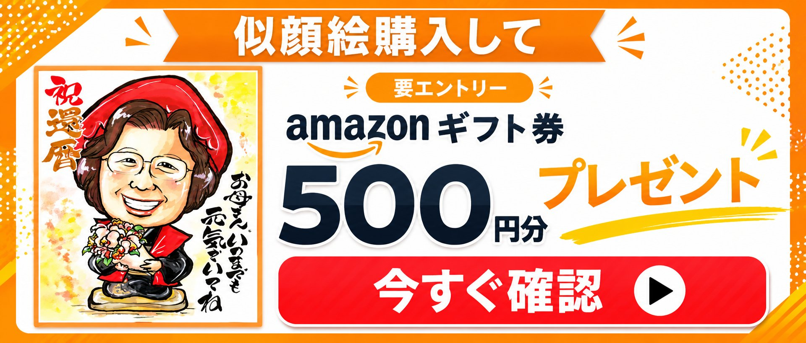

最終更新日：2026年7月

還暦祝いの予算は一律ではなく、贈る相手との距離感によって適正価格が変わります。高すぎると相手に気を遣わせてしまい、逆に安すぎると気持ちが伝わりにくくなるため、次章の相場表を目安に選ぶのが安心です。母や配偶者など特に近しい相手には少し奮発した予算、友人や職場の同僚には気軽に受け取ってもらえる価格帯を意識するとよいでしょう。
還暦の象徴である赤には、魔除けの意味や「生まれた干支に還る＝赤ちゃんに還る」という由来があります。ただし現代の60歳は仕事や趣味に忙しく、アクティブに過ごす方が主流です。全身をちゃんちゃんこで包む従来のスタイルよりも、グラスや花、小物などに赤をワンポイントで取り入れる贈り方のほうが、年齢を強調しすぎず自然に受け取ってもらいやすい傾向にあります。
かつての還暦祝いは長寿への感謝が中心でしたが、人生100年時代と言われる今、還暦はむしろ「第二の人生のスタート」というポジティブな節目として捉えられています。老後を連想させるアイテムではなく、お出かけが楽しくなるファッション小物や、自分磨きを後押しする美容グッズなど、「これからも自分らしく」という前向きなメッセージが伝わる贈り物が最も喜ばれます。
還暦祝いの金額に絶対的な決まりはありませんが、複数のギフト専門店の傾向を踏まえると、おおよそ次のレンジが目安になります。
| 贈る相手 | 予算の目安 | 選び方のポイント |
|---|---|---|
| 母・義母 | 10,000〜30,000円 | 感謝が伝わる上質な日用品や、記念に残るアイテム |
| 配偶者・パートナー | 10,000〜100,000円 程度まで幅広い | アクセサリーなど特別感のあるもの |
| 上司・お世話になった方 | 5,000〜10,000円 | フォーマルさと実用性のバランス |
| 友人・職場の同僚 | 3,000〜10,000円 | 気を遣わせない、気軽に受け取れるもの |
贈るタイミングは、満60歳の誕生日当日か、その前後の週末が一般的です。遠方の家族がいる場合はお正月やお盆などの帰省時期、あるいは敬老の日に合わせるケースも増えています。日付そのものより、「家族や大切な人が集まりやすいタイミング」を優先して問題ありません。
還暦祝いのギフト選びで外さない基準のひとつが、「自分ではなかなか買わないけれど、もらうと確実にうれしい上質な日用品」です。シルクのパジャマやオーダーメイド枕、上質な傘、バカラなどのブランドグラスといったアイテムは、日常に小さな贅沢をプラスしてくれます。
いつまでも自分らしくいたいと願う女性には、話題の美容家電やハイブランドのファッション雑貨も定番の選択肢です。ロゴが主張しすぎないシンプルなデザインを選ぶことで、大人の女性にふさわしい上品な印象に仕上がります。ヘアケアブラシや頭皮ケアガジェット、上質なハンドクリームなども、実用性と特別感を両立できる人気ジャンルです。
還暦は人生の大きな節目であるため、「これからもますますお元気で」という気持ちを形に残せるプレゼントも人気があります。日常使いできる食器や、部屋に飾れるインテリア、名前や記念日を刻める名入れギフトなどは、目にするたびにお祝いの気持ちを思い出せる贈り物として選ばれています。
良かれと思って贈ったものが「実はうれしくなかった」となってしまうケースもあります。次のような傾向には注意しましょう。
還暦祝いはフォーマルなお祝い事のため、贈り物にはのし（熨斗）をかけるのが基本です。
物欲が少ない方や、「もう十分にモノを持っている」というミニマリスト志向の女性には、体験そのものを贈る「コト消費」ギフトが好まれます。
還暦祝いのお祝いの場が終わったあとも、部屋に飾って当時の幸せな瞬間を思い出せる「形に残るもの」の価値が、近年あらためて見直されています。特に、どこにでも売っている既製品ではなく、贈る相手のためだけに作られる「オーダーメイド・ギフト」は、開けた瞬間のサプライズと、一生モノとして手元に置いておける感動を同時に届けられるのが魅力です。
名入れの食器やグラス、名前や記念日を刻んだアクセサリー、家族の歴史をひとつの作品に仕上げるフォトブックなど、オーダーメイド・ギフトの選択肢は多岐にわたります。既製品と比べて、「自分（たち）のためだけに用意してくれた」という特別感が伝わりやすく、還暦という節目にふさわしい贈り物として選ばれています。
数あるオーダーメイド・ギフトのなかでも、還暦祝いで特に人気を集めているのが手描きの似顔絵です。理由としては、次のような点が挙げられます。
一方で、似顔絵は実際に手元に届くまで仕上がりが分からないという不安もつきまとうギフトです。注文先を選ぶ際は、次のようなポイントを事前に確認しておくと失敗を避けやすくなります。
上記のポイントに照らして、還暦祝い向けの似顔絵専門店として挙げられるのが似顔絵なつみかんです。ここでは、なぜおすすめできるのか、その理由と根拠を具体的に紹介します。
※自社実績に基づく紹介です。実際に注文する際は、他の似顔絵サービスのサンプルや価格とも比較したうえで、ご自身の予算・納期・好みに合ったお店を選ぶことをおすすめします。
なつみかんでは、あったかタッチ／くっきりタッチの2種類の絵柄から選べ、いずれも「本人らしさ」を大切にしながら誇張を抑えた描き方が特徴です。公式サイトには60代前後のサンプルも掲載されているため、実際に贈る前にタッチの雰囲気を確認できるのも安心材料になります。
マッチング型サービスにありがちな「担当作家によって仕上がりが大きく変わる」というブレを防ぐため、なつみかんでは一貫した制作体制を採っています。運営10年以上・制作実績10万枚超という実績は、品質を安定させるノウハウが積み重ねられてきたことの裏付けといえます。
還暦祝いのギフトは「渡す瞬間の完成度」も重要です。なつみかんは額縁・メッセージの文字入れを含めた税込9,878円〜という価格設定で、追加料金の有無が分かりにくいという似顔絵通販にありがちな不安を解消しています。赤いちゃんちゃんこなどへの衣装変更もオプション（Sサイズ1,000円／M・Lサイズ2,000円、共に税抜）として明確に用意されているため、還暦らしい演出をしたい場合も料金が事前に分かります。
「準備が直前になってしまった」というケースでも、100%水彩手描きでありながら最短翌日発送に対応しており、急ぎの注文の9割以上に対応しているとされています。一般的な手描き似顔絵の納期（2〜3週間程度）と比べても、スケジュールに余裕がない場合の強い味方になります。
はがきサイズの縮小見本を無料で同封しているため、ラッピングを開けなくても事前に仕上がりを確認できます。この見本はそのまま記念のカードとしても手元に残せる、細やかな配慮のひとつです。
| 運営実績 | 10年以上・制作実績100,000枚突破 |
|---|---|
| 制作スタイル | 100%水彩手描き（AI・デジタル加工なし） |
| 絵柄タッチ | あったかタッチ / くっきりタッチの2種類から選択 |
| 価格（税込） | 9,878円〜（額縁・文字入れ込み） 衣装変更：Sサイズ1,000円(税抜)、M・Lサイズ2,000円(税抜) |
| 最短納期 | 最短翌日発送・お急ぎ対応（9割以上対応） |
| 見本同封 | はがきサイズの縮小見本を無料で同梱 |
| 注文方法 | WEB・LINE・電話（10〜19時）。スマホから写真送付OK |
こうした特長から、なつみかんは既製品にはない温かみを持つオーダーメイド・ギフトとして、選択肢のひとつになり得ます。もっとも、これらは主に自社の実績・仕様に基づく紹介であるため、実際に注文する際は他の似顔絵サービスのサンプルや価格とも比較したうえで、ご自身の予算・納期・好みに合ったお店を選ぶことをおすすめします。
3万円前後の予算内であれば、還暦を迎える本人の似顔絵に加えて、衣装変更やメッセージ入れといったオプションを組み合わせても十分に収まる価格帯です。「赤いちゃんちゃんこは着たくない」という方でも、絵の中だけ衣装を変えることで、本人の希望を尊重しながら還暦らしい一枚に仕上げられます。